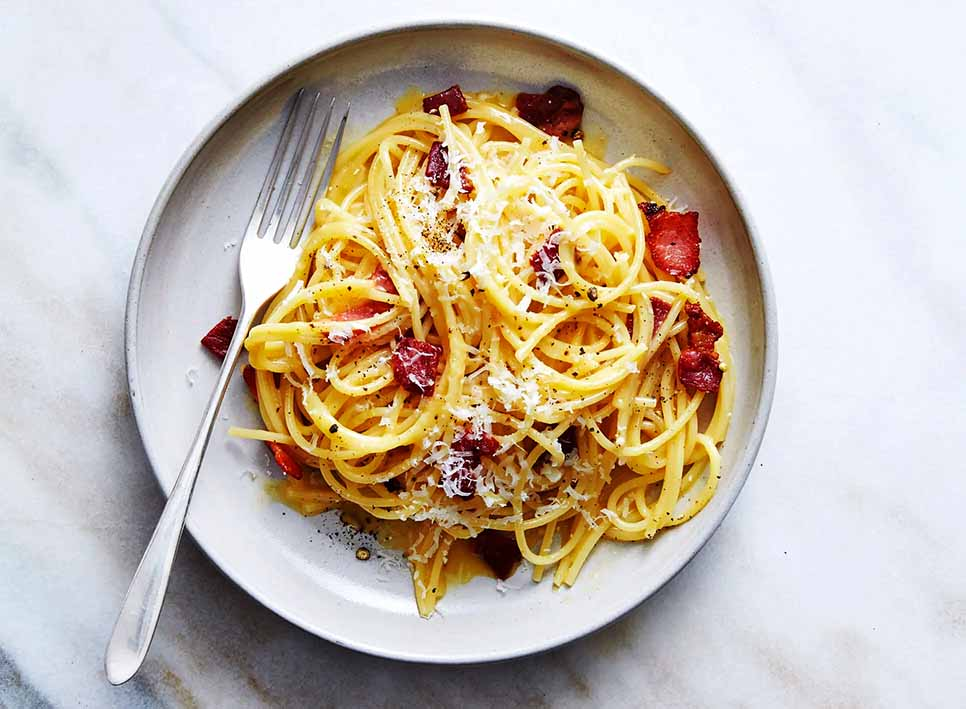

Spaghetti Carbonara
Serving Size: 4 Portions | Ready In: 30 min
This dish is a deli bacon-egg-and-cheese-on-a-roll that has been pasta-fied, fancified, fetishized and turned into an Italian tradition that, like many inviolate Italian traditions, is actually far less old than the Mayflower. Because America may have contributed to its creation, carbonara is Exhibit A in the back-and-forth between Italy and the United States when it comes to food. Remember: the main goal is creaminess.
